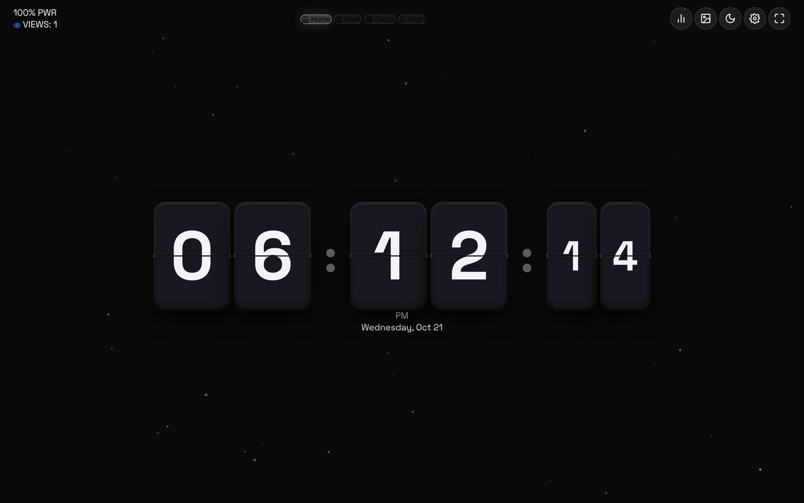
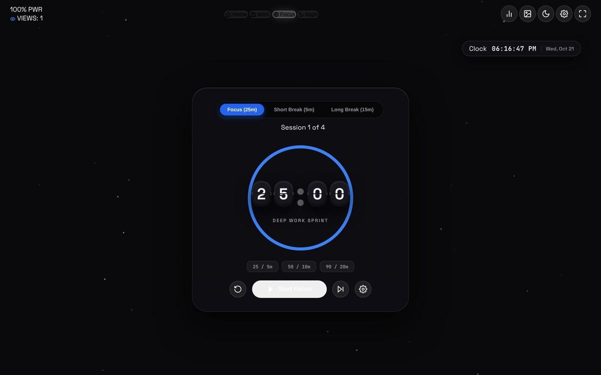

What it is
StandBy Mode Pro is a responsive web app that turns a spare phone, tablet or monitor into a smart desk display. It is inspired by the StandBy experience on iOS and the StandBy Mode Pro Android app: a fullscreen, glanceable dashboard for the clock, weather, calendar and focus tools you actually look at.
It is a single static web app — no backend, no install — that runs fullscreen from the browser.

11 clock styles
One display, many moods — each clock is its own module, from the practical to the playful.
- Retro 3D Flip — split-flap cards with mechanical rotation and click audio.
- Neon Cyberpunk — multi-tube neon numerals with animated colour pulsing.
- Matrix Digital Rain — phosphorescent green glyph terminal.
- Solar Arc — celestial daylight arc, solar noon and golden hour.
- Big Crop, Radial Sweep, Day & Senior Friendly, 7-Segment LED, Bauhaus, AMOLED Deep Black, Star Trek LCARS — including a pure-black AMOLED face for bedtime docks.
Widgets & layouts
The dashboard flexes from a single fullscreen clock to a multi-panel wall display.
- Layouts: Standalone (clock only), Duo (2 panels), Quad (2×2 grid) and Focus mode.
- 9 widgets: live weather, calendar, a universal media player, timer & stopwatch, TODO & protocols, tally counter, daily quotes, smart photo frame, and a vibes/atmosphere selector.
- Spaces: Home, Work, Focus and Night, switchable with keys 1–4.

Hardware protection
Leaving a display on all day is hard on the panel, so the app is built for that reality:
- Night mode (N) for a warm, dim tint after dark.
- OLED burn-in protection with a configurable pixel-displacement interval.
- Idle screensaver with a configurable timeout, plus fullscreen mode (F).
- Screen Wake Lock where the browser supports it.
Try it
Open the live app, hit fullscreen, and set a phone on a stand. Run it locally with any static server — it uses native ES modules, so serve it over HTTP rather than opening the file directly.